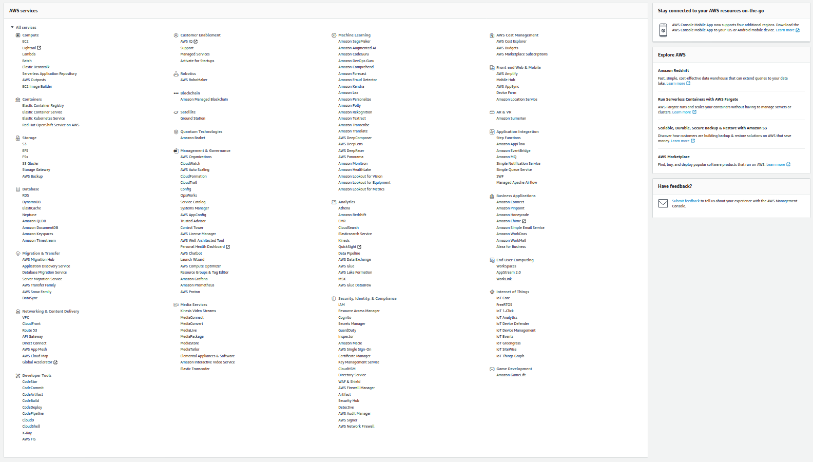

Intro to AWS
Khinshan Khan
@kkhan01
AWS
AWS stands for Amazon Web Services.
They provide services for developers. I recommend looking at the How the Internet Works Presentation before this one.
AWS Services
… there's a lot!

EC2
Elastic Compute Cloud

EC2
Basically a VPS in the cloud that can scale.
This is usually split up for large and scalable web apps with the following services –>
S3
Simple Storage Service

https://blitapp.com/blog/articles/upload-your-captures-to-s3
S3
You can store data "objects" in a geographic location.
The "objects" are really just any type of file. This is often used for assets like html files, css files, js files, json files, etc. It's akin to filesytem as a service.
Cloudfront

Cloudfront
A Content Delivery Network (CDN) which proxies and caches web data for users whenever possible.
Usually you use this in unison with S3 for making websites.
Lambda

Lambdas
This is the "backend" portion of the more scalable and low cost servers split.
You bundle up your code into a single function. Lambda functions are "stateless", which allows it to scale easily since there's no architecture necessary to spin up along with each instance. They can easily be containerized.
Lambda Hot n' Cold
After a period of inactivity, AWS will drop the container, and the function will become inactive (this is called the function becoming "cold").
It gets hot again when a trigger is detected, start up does take some time, but you're only paying for when you're using the computing power.
Lambda Events
Lambda functions need to be hook up to events/ triggers.
A basic event would be an "API Gateway Proxy Request", which is basically just an endpoint.
Another kind of trigger can be to a database event like write or modify.
There are a lot more usecases, but it would take hours 🙈
Stateless are useless, right?
If they're stateless, how are they useful is probably an important question right?
If it's entirely stateless, you can't view its logs or save data or do anything. Usually a backend is meant to process data and handle things like APIs and DBs (stereotype, I know 😱).
The secret to serverless and stateless are services and dependency injections.
Backend Meme 😂

CloudWatch

CloudWatch
Basically logs and metrics as a service. It will show your logs
fmt.Println("Hello!")
with timestamps and show when a lambda starts and ends an connection and if it failed, etc.
Make 'em Pretty!
You'll need to stringify your objects. You can also prettify them by adding indents 🎨
objIndented, err := json.MarshalIndent(obj, "", " ")
if err != nil {
panic(err)
}
fmt.Printf("My Cool Obj as a pretty string:\n%v\n", string(objIndented))
DynamoDB

DynamoDB
Although your data may look like rows in the aws console, they're documents!
DynamoDB is a key-value and document database, think of jsons as the rows.
DynamoDB Internals

DynamoDB Quirks
You need a PK (partition key) and a SK (sort key).
These keys act on attributes on the documents to make them query-able.
But what ARE PK and SK?
The PK acts to store documents in such a manner that it'll be similar to a hashmap in a sense, though the PK can be the same for some documents, in which case they're just grouped together.
The SK acts as a "sort and filter" on attributes. It allow for queries like if the SK of an item starts with, ends with, is between, less, greater, etc.
Let's make Gamestop! With DynamoDB 😏

I wanted to do a mini example of how a dynamo db may look because it'll teach us more about how it works.
More Deets
Of course this isn't how Gamestop is actually implemented, but it's just an example.
Let's focus on the aspect of how Gamestop sells games 👀
We'll make 3 users: Alice, Jane, and John.
What the Collections may Look Like
[
{
name: Alice,
age: 7,
location: CA
},
{
name: Jane,
age: 15,
location: CA
},
{
name: John,
age: 23,
location: NY
},
]
What about our DB Keys?
Let's consider a login. Let's make the login super simplified: they just need to enter in their name (insecure, I know 😱).
For querying their names, we just need a PK of name and we can get their information pretty easily.
If there were 2 Alices but in different states, we can also add in a SK on location.
What about more complicated things?
As Gamestop sells games, maybe they need to decide where to send more mature games vs family friendly games. In which case, we'll want a count of mature audience.
We can do a simplified count if our PK is the location and the SK is the age, and then per state we run the look up along with age > 18.
This was insanely inefficient and useless tbh, a scan and reduce would've been easier, but it's just an example…
Wow, so basic…?
I know, it seemed pretty easy to do the query, but we have an entirely different PK and SK from login when we searched.
So, does dynamo allow for multiple PK and SK? Yes.
What you'll have to do is create a GSI (global secondary index, you can also create a local one depending on your usecase).
DynamoDB GSIs
A GSI lets you define another PK and SK, but at a cost.
The way it's implemented under the hood is basically by creating another second, read only, table which it will automatically copy over rows from the primary table.
Minor Note about GSI
The copy mechanism depends on the primary table's row having the PK attribute, so in our example, if John didn't specify location, the row wouldn't be copied over and wouldn't appear in our age query.
SQS
Simple Queue Service

SQS
Message queue in the cloud to share messages between your infrastructure. These messages are short lived usually.
Eg you can have a lambda pull data from an api every so often and store it in the queue. Then you can process the data in a different lambda etc.
TLDR AWS Services
There's so much more depth and breadth we can get into about AWS services.
I recommend: learn the basic ones so you have an idea of how serverless technology works. Then, google and find 'em as you need them.
Fin
Finally done 🎉
Don't quote me on anything tbh.